数学学习始于数字。在我们学会数数，以及利用文字、数字和实物来表示数的概念之后，学校老师就会教我们通过加、减、乘、除等运算程序摆弄这些数字，而且这个过程会持续多年。但是，我们往往不会注意到这些数字本身就具有某些神奇的魔力，稍加研究，便会给我们带来无穷的乐趣。
以数学家卡尔·弗里德里希·高斯（Karl Friedrich Gauss）小时候遇到的一个问题为例。一天，为了在自己处理其他事务时也让学生们有事可做，高斯的老师给全班同学布置了一个繁重的计算任务，要求他们求出从1至100的所有数字的和。结果，高斯很快就写出了答案——5 050，让老师和其他同学大为震惊。他是怎么得出这个答案的呢？高斯默想着把从1至100的所有数字分成两行，1至50按从小到大的顺序位于第一行，51至100按从大到小的顺序位于下面一行，如下图所示。高斯发现，每一列的两个数字的和都等于101，因此所有数字的总和就是50×101，等于5 050。
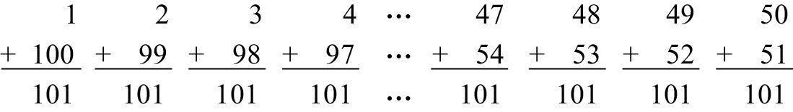
后来，高斯成了19世纪最伟大的数学家，这并不是因为他善于心算，而是因为他可以让数字展现出优美的舞姿。我们将在本章探讨很多有趣的数字规律，以了解数字是如何跳出美丽的舞蹈的。其中，有的规律可以帮助我们提高心算的速度，有的则会给我们带来美的享受。
我们在前文中用高斯的方法计算了前100个数字的和，如果我们需要计算前17个、1 000个或者100万个数字的和，该怎么办呢？事实上，我们可以利用高斯的方法，计算前n个数字的和，n可以取任意值。有人可能会觉得数字过于抽象，那么我们可以结合图形来表示这个过程。如下图所示，由于1、3、6、10和15等数字可以用相应个数的小圆圈表示，这些小圆圈又可以排列成三角形，因此我们把这些数字称作“三角形数”（triangular number）。（也许你认为一个圆圈无法构成一个三角形，但1还是被视为三角形数。）根据三角形数的定义，第n个三角形数为1 + 2 + 3 + … + n。
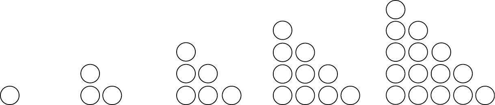
请注意观察，如果把两个三角形并排放置，如下图所示，会出现什么样的结果呢？
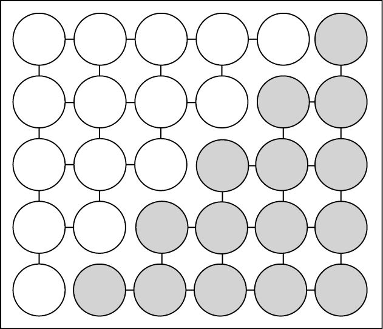
这个由两个三角形构成的矩形共包含5行和6列小圆圈，总数为30个。因此，每个三角形所包含的小圆圈数应该是矩形的1/2，也就是15个。当然，这个结果我们早已知道。但是，上述方法表明，如果我们把包含n行小圆圈的两个三角形放到一起，那么所得到的矩形包含n行和n + 1列小圆圈，也就是n×(n+1)个［通常简写为n（n+1）个］。于是，前n个数字的求和公式就这样被推导出来了：
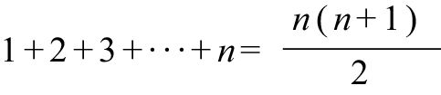
请大家回想一下这个推导过程。通过求前100个数字的和，我们找出一个规律，然后加以推广，就可以处理同一类型的所有问题。如果要求从1至100万的所有数字的和，只需两步就可完成：1 000 000乘以1 000 001，再除以2！
一旦你找到了一个数学公式，其他公式常常会自动地出现在你的眼前。例如，如果我们把上述方程式的两边同时乘以2，就会得出前n个偶数的求和公式：
2 + 4 + 6 + … + 2n = n (n + 1)
那么，前n个奇数的和是多少呢？让我们看看数字会给我们哪些提示。
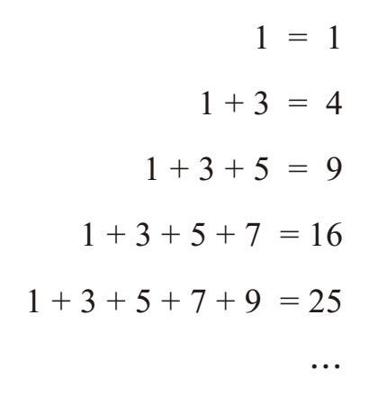
等号右边的数字都是“完全平方数”（perfect squares）：1 × 1，2 × 2，3 × 3，等等。不难看出，前n个奇数的和似乎是n × n，记作n2。但是，如何确定这个结果不是一种暂时性的巧合呢？我们将在第6章通过几种方法来推导出这个公式。不过，我们应该可以找到一个非常简单的方法，解释这个并不复杂的规律。我最喜欢使用的证明方法仍然是计算小圆圈的个数，这个方法还会告诉我们像25这样的数字为什么又叫完全平方数。前5个奇数的和为什么是52呢？看看下图中边长为5的正方形，你就知道了。
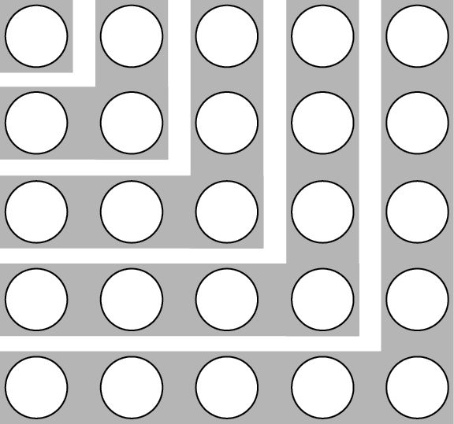
这个正方形共包含5×5=25个小圆圈。接下来，我们换一种方法来数上图中的小圆圈的个数。我们从左上角的第一个小圆圈开始数，它依次被3个、5个、7个和9个小圆圈包围，即：
1 + 3 + 5 + 7 + 9 = 52
如果正方形的边长是n，我们就可以把它分成n个大小分别是1，3，5，…，(2n – 1)的L形区域（开口朝向左上角）。于是，我们得出前n个奇数的求和公式：
1 + 3 + 5 + … + (2n–1) = n2
我们将在本书后面的章节中看到，高等数学可以利用这种统计小圆圈个数的方法（以及通过两种不同方法回答一个问题的常规做法），得出一些非常有意思的结果。不过，我们也可以借助这种方法去理解初等数学，例如，为什么3 × 5 = 5 × 3。小时候，老师告诉我们，因数的先后次序不会影响乘积的大小（这在数学领域被称为乘法交换律）。我相信，你们当时根本没有怀疑它的准确性。但是，每袋装5枚弹珠、共3袋，和每袋装3枚弹珠、共5袋，弹珠的总数为什么一样多呢？数一数3 × 5的矩形中小圆圈的个数，就能理解其中的道理了。按行统计，我们看到一共有3行，每行有5个小圆圈，所以小圆圈的个数是3 × 5。但是，如果按列计算，那么一共有5列，每列3个小圆圈，因此小圆圈的个数是5 × 3。
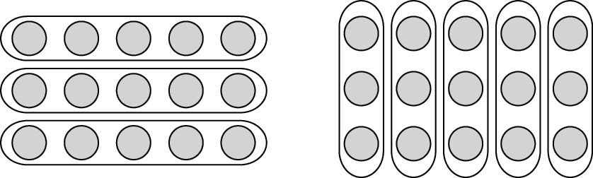
利用奇数和的规律，我们还可以发现一个更加优美的规律。如果我们的目标是让这些数字跳舞，那么它们应该跳的是“方块舞”（square dancing）。
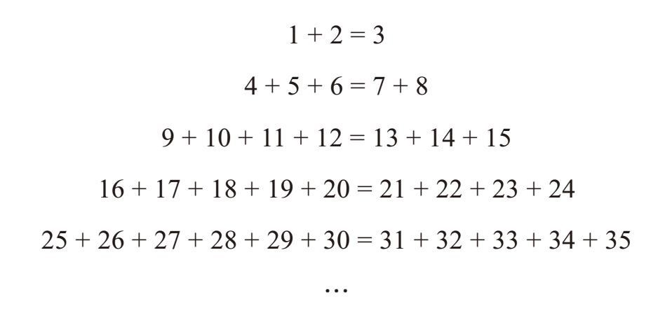
你发现其中的规律了吗？每行数字的个数很容易数清楚，分别是3、5、7、9、11，等等。然而，下面这个规律却可能是大家想不到的。每行的第一个数字是多少？从前5行看，分别是1、4、9、16、25，它们都是完全平方数。为什么呢？我们以第5行为例。在第5行之前，一共出现了多少个数字？数一数前4行的数字，共有3 + 5 + 7 + 9个。在这个和的基础上加1，就可以得到第5行的第一个数字，所以，这个数字就是前5个奇数的和，即52。
接下来，我们不用求和的方法，证明第5个等式成立。如果高斯遇到这种情况，他会怎么做呢？我们先不看这行的第一个数，也就是25，那么等号左边只剩下5个数，而且它们分别比等号右边的5个数小5。
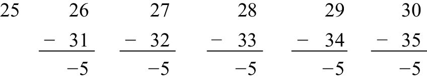
因此，等式右边5个数的和比等式左边除25之外的5个数的和大25。但是，两者之间的差正好被等式左边的第一个数字25弥补了，因此等式成立。利用同样的方法完成一些代数运算就可以证明，即使行数无限增加，这个规律也依然存在。
下面，我把这些代数运算介绍给大家，如果你不感兴趣，可以略过不看。在第n行之前，有3 + 5 + 7 + … + (2n – 1) = n2– 1个数字，因此第n行的第一个数字是n2，后面有n个连续的数字，从n2 + 1至n2 + n。等式右边有n个连续的数字，从n2 + n + 1至n2 + 2n。如果先不考虑等式左边的第一个数字n2，就会发现等式右边的n个数字分别比等式左边对应的n个数字大n，因此两者的差是n × n，即n2。如果加上左边第一个数字n2，等式就成立了。
我们再讨论另外一个规律。我们已经知道，可以利用奇数得到平方数。现在，我们把下图大三角形中的所有奇数相加，看看得数有什么规律。
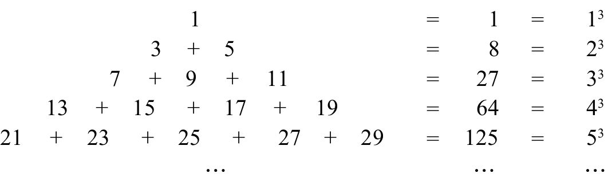
我们发现3 + 5 = 8，7 + 9 + 11 = 27，13 + 15 + 17 + 19 = 64。数字1、8、27和64有什么共同点呢？它们都是“完全立方数”（perfect cubes）！例如，将第5行的5个数字相加，就会得到
21 + 23 + 25 + 27 + 29 = 125 = 5×5×5 = 53
这个规律似乎表明，第n行所有数字的和是n3。这是一个永恒的规律，还是一个奇特的巧合呢？为了理解这个规律，我们观察第1、3、5行，看看每行正中间的那个数字有什么特点。可以看到，这三个数字分别是完全平方数1、9和25。第2行和第4行的正中间不是数字，但是加号左右两边的两个数字分别是3、5和15、17，它们的平均数分别是4和16。这个规律如何加以利用呢？
查看第5行我们就会发现，这5个数字关于25左右对称。因此无须相加，我们就可以知道它们的和是53。这是因为这5个数的平均值是52，它们的和是52 + 52 + 52 + 52 + 52 = 5 ×52，即53。同理，第4行中4个数字的平均值是42，因此它们的和必然是43。通过一些代数运算（这里不再赘述），我们就能证明第n行中n个数字的平均值是n2，它们的和是我们预期的n3。
关于立方数和平方数，我再给大家介绍一个规律吧。从13开始，将所有数字的立方数相加，这个和有什么特点呢？
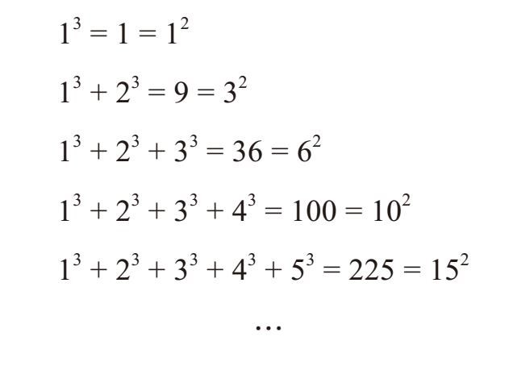
自然数的立方和分别是1、9、36、100、225，等等，它们都是完全平方数。而且，这些完全平方数还具有某种特点：它们是1、3、6、10、15…的平方数，而这些数字又都是三角形数！前文中已经讨论过，这些三角形数都是整数的和，因此
13 + 23 + 33 + 43 + 53 = 225 = 152 =(1 + 2 + 3 + 4 + 5)2
换句话说，前n个自然数的立方和等于前n个自然数的和的平方。现在，我们还不能证明这个结论是正确的，在第6章中我将为大家介绍两种相关的证明方法。